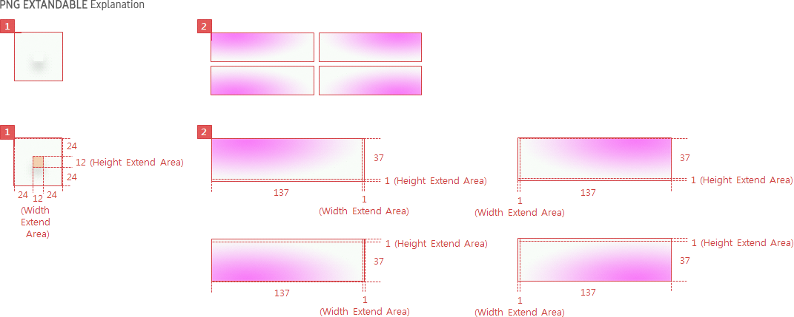

Toast Popup
C_POPUPTOAST
- Definition
- Use a toast to provide simple messages when the user does not need to make an additional action or confirmation.
- Usage
-
- Unlike other popups, a toast only have the body field as they are just used for providing simple feedback to users’ actions.
- Interaction
-
- - Also, users can interact with the screen while a toast is on the screen. A toast will automatically disappear after a certain time.
- - Toasts should appear around the component where the users’ last action occurred. This helps users easily find and check information without having to look for it.
- - However, if the screen that the users’ last action occurred is already closed or the toast message is not related to the users’ last action, toasts should appear at the center of the screen.
- Specs
-
- Properties
-
- Toast popup consists of the following elements :
-
- 1. Text (Mandatory)
-
- - Text should provide simple feedback message about the current status.
- - The message text should be simple and be only 1 line long.
- Property Table
-
C_POPUPTOAST PROPERTY USE VALUE Text ◎ <<value>> - Visual
-
- GUI
-
- C_POPUPTOAST
- 

LINK : C_POPUPBASIC

- *Tags :
- Basic Popup